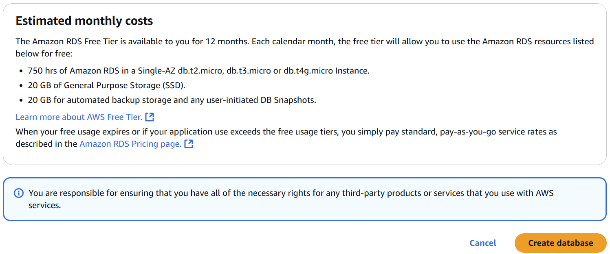
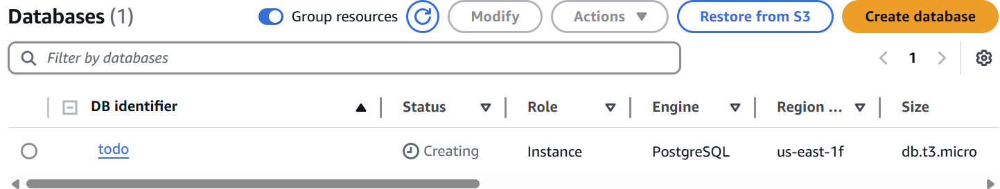

This week we are going to deploy our todo application, now called TaskOverflow, on AWS infrastructure using a
hosted database and a single server website.
Specifically, this week you need to:
Deploy an AWS Relational Database Service (RDS) using Terraform.
Deploy the TaskOverflow container on AWS infrastructure using an ECS cluster.
2 Terraform in AWS Learner Labs
Following the steps from the week four practical, start a Learner Lab in AWS Academy. For this practical, you do
not need to create any resources using the AWS Console. The console can be used to verify that Terraform has
correctly provisioned resources.
Using the GitHub Classroom link for this practical provided by your tutor on edstem, create a
repository to work within.
Clone the repository or open an environment in GitHub CodeSpaces1
Start the Learner Lab then, once the lab has started, click on ‘AWS Details’ to display information
about the lab.
Click on the first ‘Show’ button next to ‘AWS CLI’ which will display a text block starting with
[default].
Within your repository create a credentials file and copy the contents of the text block into the
file. Do notshare this file contents — do notcommit it.
Create a main.tf file in the your repository with the following contents:
We need to initialise Terraform which will fetch the required dependencies. This is done with the terraforminit command.
$terraforminit
This command will create a .terraform directory which stores providers and a provider lock file,
.terraform.lock.hcl.
To verify that we have setup Terraform correctly, use terraform plan.
$terraformplan
As we currently have no resources configured, it should find that no changes are required. Note that this
does not ensure our credentials are correctly configured as Terraform has no reason to try authenticating
yet.
3 Deploying a Database in AWS
Warning
This section manually deploys a PostgreSQL RDS instance, this is intended as a demonstration by
your tutor. You should attempt to deploy your infrastructure using Terraform rather than manually.
To get started let us jump into the lab environment and have a look at AWS RDS which is an AWS managed
database service. To get to the RDS service either search for it or browse Services -> Database -> Aurora and RDS,
as shown below.
Now we are in the management interface for all our RDS instances. Select “DB Instances (0/40)” or click
“Databases” on the left panel.
This page should appear familiar as it is very similar to the AWS EC2 instance page. Let us create a new database
by clicking on the “Create Database” button.
Warning
In the next section we cannot use the Easy Create option as it tries to create an IAM account, which
is disabled in Learner Labs.
We will create a standard database so select standard and PostgreSQL. We will use version 17, which is a fairly
recent release.
For today, we are going to use “Free Tier” but in the future, you may wish to explore the different deployment
options. Please peruse the available options.
Now we need to name our database and create credentials to use when connecting from our application. Enter
memorable credentials as these will be used later.
For exploring the process select t3.micro, which should be adequate for our needs.
For storage we will leave all the default options.
In connectivity we will leave the Compute resource and VPC with their default values. We need to
make our instance publicly available. Usually you do not want to expose your databases publicly and,
would instead, have a server sitting in-front (e.g. an API, application or web server). For our learning
purposes though we are going to expose it directly just like we did with our EC2 instances earlier in the
course.
When selecting public access as yes, we have to create a new Security Group. Give this Security Group a
sensible name.
We will leave the authentication as password based and monitoring with its default values. We need to expand
the “Additional configuration” section. Fill in the “Initial Database Name” field as “todo”, this will automatically
create the database to which our todo application expects to connect.
Now we can click create database, which will take some time.

It may take several minutes to create. If we had selected to enable automated backups, the database would do an
initial backup when it is created.
AWS will suggest add-ons for the newly created database. The suggested add-ons are useful features for a
production environment. We do not need them for the purposes of this practical.

When the database has been created, you can select it to view the configuration and details. In this menu
we also see the endpoint address, which we will need to configure our TaskOverflow application to
use.
4 RDS Database with Terraform
Now would be a good time to browse the documentation for the RDS database in Terraform. You will want to get
practice at reading and understanding Terraform documentation.
When we created the database using the AWS Console, we needed an appropriate security group so that we
could access the database. We can create the security group using Terraform as well.
As we mentioned in the Infrastructure as Code notes [1], in this course we will use Docker to configure machines
and Terraform to configure infrastructure. AWS has the ability to deploy Docker containers using a service known
as Elastic Container Service (ECS). We will cover ECS and briefly contrast it to manual deployment via
EC2.
For this practical we have made available a Docker container running the TaskOverflow application, which
you can use for your AWS deployment. This container is available on GitHub under the CSSE6400
organisation:
This container is very similar to what you have been building in the practicals but contains a simple UI and some extra features
for the future practicals.2
5.1 Setup
Of all the different ways that we can deploy our application, we have decided to offload the database to
AWS RDS. This means that we can move all the "state" of our application out of our containerised
environment.
To begin, we will reuse the Terraform from above for deploying the RDS database. Extend the existing local
Terraform variables to include the address of the container, so that we have:
This already sets up an RDS instance of Postgres and a security group to allow access to it. Now we can run
terraform init and terraform apply to create our database. Like when creating the database from the AWS
console, this may take several minutes. Once the database has been created, go to the AWS console and check its
status and details.
We have also added a local variable for us to use later. Variables in Terraform can be populated via two
mechanisms, they can be in a variables block which can be overridden, or they can be in a locals block which can
be used to store values that are used in multiple places.
5.2 ECS Deployment
ECS mimics a similar environment as Docker Compose but as an AWS service.
To start off we need to get some information from our current AWS environment so that we can use it later.
Add the code below to fetch the IAM role known as LabRole. It is a super user in the Learner Lab
environments which can do everything you can do through the AWS Console. We will also fetch
the default VPC and the private subnets within that VPC, as they are required for the ECS network
configuration.
In Terraform, the way to retrieve external information is data sources. These are functionally like resources but
they are not created or destroyed, instead they are populated with attributes from the current state. See the
below for the minor syntactic difference.
On its own this cluster is not particularly useful. We need to create a task definition which is a
description of the container that we want to run. This is where we will define the image that we want to
run, the environment variables, the port mappings, etc. This is similar to a server entry in Docker
Compose.
Warning
The «DEFINITION line cannot have a trailing space. Ensure that one has not been erroneously
inserted.
A family is similar to the name of the task but it is a name that persists through multiple revisions of
the task.
network_mode
This is the network mode that the container will run in, we want to run on regular AWS VPC
infrastructure.
requires_compatibilities
This is the type of container that we want to run. This can be fargate, EC2, or external.
cpu
The amount of CPU units that the container will be allocated. 1024 is equivalen to one vCPU.
memory
The amount of memory that the container will be allocated, here we’ve chosen 2GB.
execution_role_arn
The IAM role that the container will run as. Importantly, we have re-used the lab role we previously
retrieved. This gives the instance full admin permission for our lab environment.
container_definitions
This is the definition of the container, it should look similar to Docker Compose. The only
additional feature here is the logConfiguration. This configures our container to write logs to AWS
CloudWatch, so that we can see if anything has gone wrong.
Now we have a description of our container as a task. We need a service on which to run the container. This is
functionally similar to an auto-scaling group, as described in the Distributed Systems I lecture [2]. We specify how
many instances of the described container we want and it will provision them. We also specify which ECS cluster
and AWS subnets to run the containers within.
In the above we refer to a non-existent security group. As always, to be able to access our instances over the
network we need to add a security group policy to enable it.
Finally, if we run the terraform apply command, it should provision an ECS cluster with a service that will
then create one ECS container based on our task description.
Note that we are doing something a bit weird in this deployment. Normally ECS expects multiple instances of
containers, so it naturally expects a load balancer. This makes it difficult for us to discover the public IP of our
single instance using Terraform. Instead, you will need to use the AWS Console to find the public IP
address.
This is an opportunity for you to explore the ECS interface and find the task, within the service, within the
cluster that we have provisioned.
5.3 EC2 Deployment
Aside
The deployment diagram below is what it would look like, if we deployed our application to an EC2
instance. As you can see, ECS provides us with features to manage services and tasks for us.
5.4 EKS / K8S
Amazon Elastic Kubernetes Service (EKS) is a platform to run
Kubernetes3
(K8S) clusters. We recommend, when you have time, that you look at Kubernetes as it is widely used in
industry.
6 Hosting TaskOverflow Images
When we last deployed a container on AWS, we used an existing hosted image. Now, we will be developing our
own image, so we will need a mechanism to host the image. For this, we will use AWS ECR, Docker, and Terraform.
AWS ECR is the Elastic Container Registry. It is a container registry like DockerHub or GitHub. We can use it to host
our image. The steps below use Terraform to
create an ECR repository for our image,
build our Docker image, and
push our Docker image.
Info
This is a non-standard process. As you may have seen in the DevOps tutorial, we would ordinarily
like our code commits to trigger a CI/CD pipeline which builds the images.
If you would like, you can use GitHub actions to build and push your container to the GitHub
container registry and authenticate when you pull the image. However, using ECR simplifies the
process, despite the oddities introduced by having a non-persistent ECR repository.
Getting Started
Using the GitHub Classroom link for this practical provided on Edstem, create a repository to work
within.
Install Terraform, if it is not already installed, as it will be required again this week and in later weeks.
Start your Learner Lab and copy the AWS Learner Lab credentials into a credentials file in the root
of the repository.
What’s New
We are starting again with our todo application from roughly where we left off in the week 3
practical. We have added a new directory todo/app that has the static HTML files for the TaskOverflow
website and added a route to serve these files. We have also created a production version of the
server that uses gunicorn, the bin directory is used by this image. Our original Docker image is now in
Dockerfile.dev.
We will setup our initial Terraform configuration. Note that now we introduce a new required provider. This
provider is for Docker.
As with our AWS provider, when we initially configure the provider, we want to authenticate so that we can
later push to our registry using the Docker provider. We will use the aws_ecr_authorization_token data block to
get appropriate ECR credentials for Docker.
Remember — to push to a container registry we need a local container whose tag matches the remote URL.
We could then create and push the container locally with:
Notice that we are able to utilise the output of the ECR repository as the URL which resolves to the correct URL
for the image.
If you execute terraform plan, it will probably report an inconsistent dependency. This is because we have
added a new provider and its dependency needs to be added to the lock file. Execute terraform init -upgrade
to do this.
You can now terraform apply to push the container to the registry. Note that the Docker Engine / Daemon
must be running so Terraform can talk to it.